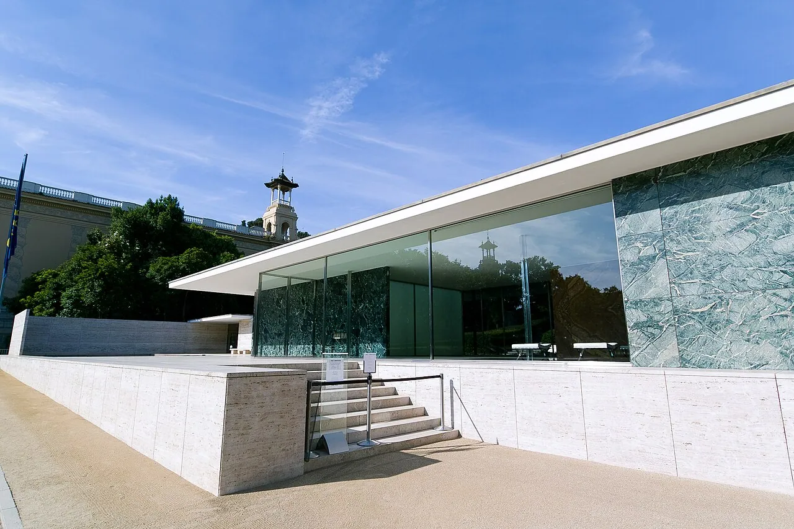
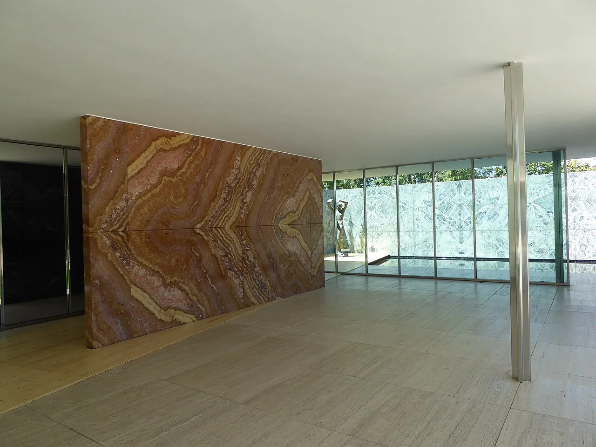
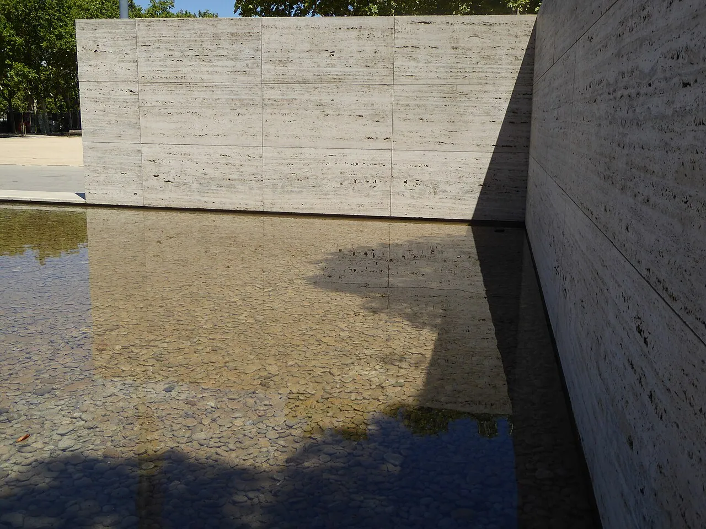

1/9 · Exterior · The Barcelona Pavilion, Barcelona, 14 October 2010Photo: Ashley Pomeroy at English Wikipedia · CC BY 3.0 · source2/9 · Exterior · 1929 Barcelona Pavilion reconstruction by Mies van der RohePhoto: Russ McGinn · CC BY-SA 2.5 · source3/9 · Exterior · Barcelona-Pavillon, Barcelona, Catalonia, July 2014Photo: Ardfern · CC BY-SA 3.0 · source

4/9 · Exterior · The Barcelona Pavilion , designed by Ludwig Mies van der Rohe for the 1929 International ExhibitionPhoto: thierrytutin · CC BY 2.0 · source5/9 · Interior · Inside the reconstructed Barcelona Pavilion, originally designed by Ludwig Mies van der RohePhoto: Christian Gänshirt · CC BY-SA 4.0 · source

6/9 · Interior · Barcelona-Pavillon, Barcelona, Catalonia, July 2014Photo: Ardfern · CC BY-SA 3.0 · source

7/9 · Detail · Reflecting pool, Barcelona-Pavillon, Barcelona, Catalonia, July 2014Photo: Ardfern · CC BY-SA 3.0 · source8/9 · Detail · Barcelona-Pavillon, Barcelona, Catalonia, July 2014Photo: Ardfern · CC BY-SA 3.0 · source


.JPG){kind=link}
.jpg){kind=link}

.JPG){kind=link}
.JPG){kind=link}
.JPG){kind=link}